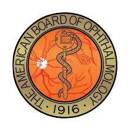

Lin Chou, MD
Dr. Chou was born in Toronto, Canada. She attended college at Princeton University in New Jersey and then returned home to attend medical school at the University of Toronto where she was elected to the Alpha Omega Alpha Honor Medical Society. She completed her internal medicine internship at Toronto General Hospital and ophthalmology residency at University of Toronto Hospitals. From there she pursued her interest in cornea and external diseases with a fellowship at Wills Eye Hospital in Philadelphia, PA. Dr. Chou has been certified by the American Board of Ophthalmology since 1993 and actively participates in its Maintenance of Certification program.
Dr. Chou specializes in cataract surgery and is on staff at the Surgery Center of Rhode Island and at Lifespan. She is married to Alfred Paul, MD and their daughter is now in training to become an ophthalmologist. Dr. Chou is an accomplished pianist with a degree in piano performance from the Royal Conservatory of Music in Toronto, Canada. She enjoys playing piano in her free time.
